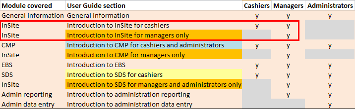
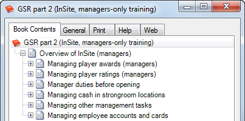

Reusing role-based content for joint training11/08/15

Managers, cashiers and administrators perform common and unique functions at a hospitality venue. In this article I’ll briefly discuss how we designed joint training sessions using single sourcing.
In Creating role-based user guides using single sourcing, I discussed how we can reuse topics and books to organise and publish role-based content. User guides were created for three roles.
Our main subject matter expert asked for help when he needed to arrange joint training at each venue. We quickly determined we could reuse the existing role-based content to meet the need.
Identifying overlapping and unique functions
Recall from my earlier article that:
- some overlapping functions are done by two or three roles
- other unique functions are only done by one role.

This translates into the following joint training sessions for the three roles. I’ve highlighted in red the InSite training sessions I’ll be discussing next.
Joint training for overlapping functions
Recall the cashiers example from my previous article. We can jointly train the cashiers and managers on these InSite functions because the managers also perform these (refer to the diagrams above).

Individual training for unique functions
I won’t show it here but we also created a similar book for the manager’s InSite functions:
- some overlapping functions with the cashiers
- some unique functions that only they do.
For the new requirement, we duplicated the manager’s book and removed the overlapping functions; to leave the following unique ones for the manager’s-only training session. I’ve collapsed the topics into their sections in the book shown.
By working closely with subject matter experts, it’s possible to create new ways of working with existing content.
Next month I’ll discuss how we can reuse content in instructor-led training materials.